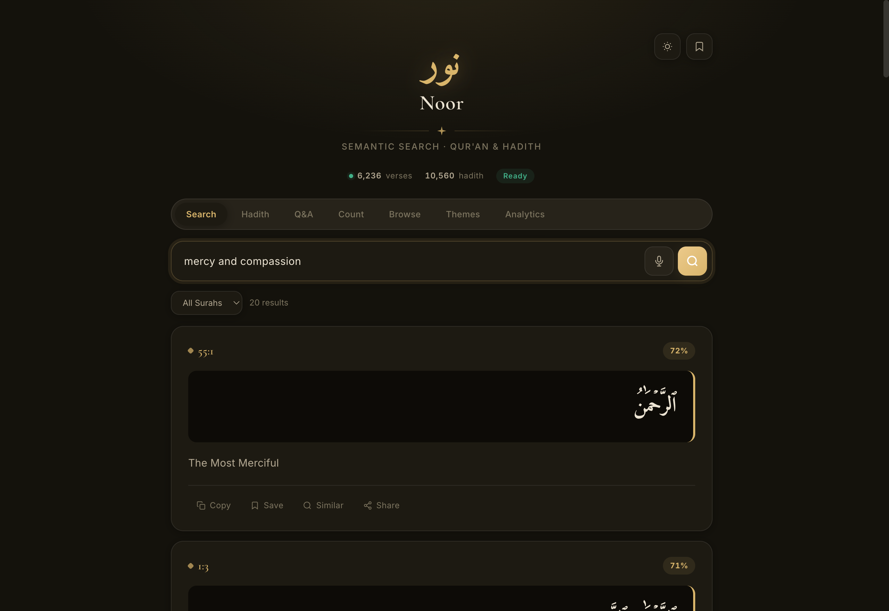
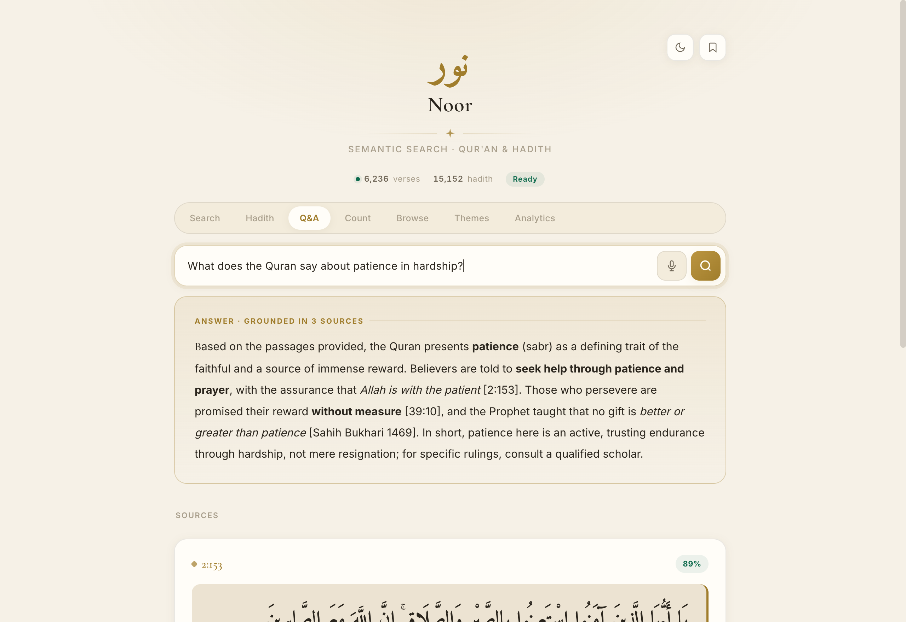
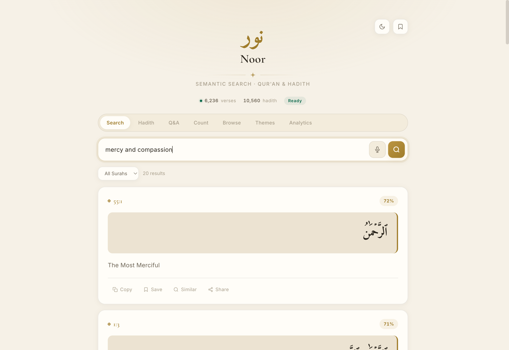

Noor is AI semantic search over the Qur'an and Hadith. Ask in Arabic or English - "verses about patience in adversity", "حديث عن حقوق الجار" - and get matches by meaning, not keyword, with cited and grounded answers.

One interface over the Qur'an and the major Hadith collections - in Arabic or English.
Ask in Arabic or English; get the closest verses and hadith ranked by meaning, not surface form.
Retrieves the most relevant passages, then writes a cited answer drawn from only those sources.
Speak a question; it's transcribed and run through whichever mode you're in.
A reference like 2:255 resolves straight to the verse.
TF-IDF and clustering surface concepts and themes across the corpus.
An Arabic-first interface that stays calm to read in either theme.
Noor never answers from thin air - it retrieves first, then writes only from what it found, citing each verse and hadith inline.


Arabic-first, in light or dark.
Multilingual embeddings in a sqlite-vec vector store - the entire corpus index is a single SQLite file, deployable on hardware as small as a Raspberry Pi. A FastAPI backend, a single-file Vue 3 frontend, and nginx at the edge. Q&A and voice are reached server-side, so no model keys ever reach the browser.
Noor has no tracking and no ads. If it's useful to you, you can support continued development - pay what you like, once or monthly.